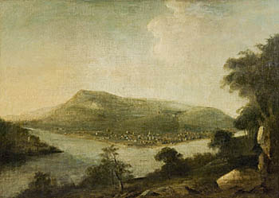
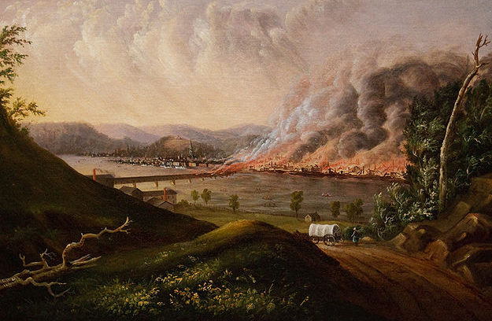
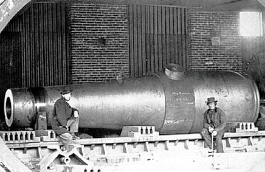
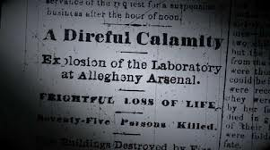

|
In the Allegheny Mountain Valley of western Pennsylvania, the Monongahela and the
Allegheny Rivers come together to form the Ohio River. Here, in 1758, British General John
Forbes forced the French from their encampment at Fort Duquesne, and then promptly renamed
the settlement in honor of his friend William Pitt. Fort Pitt was rebuilt into a
formidable fortress, in order to aid the British in keeping the French out of the Ohio
Valley and to help them develop a relationship with the Native American population. At
that time there was little indication that, from these modest beginnings, Pittsburgh would
quickly emerge as one of the continent's mightiest industrial centers, known in the
antebellum era as the "Iron City."
When the new American republic was established in 1787, the town of Pittsburgh, located
only a few steps from Fort Pitt, was home to 130 families. Though fairly modest in size,
it had watchmakers, cabinetmakers, hatters, blacksmiths, boatyards, and even a
newspaper—the Pittsburgh Gazette. It also had a proper school, the Pittsburgh
|

Pittsburgh as it appeared in 1804
|
Academy, which opened its doors in 1789. The small town grew at a brisk pace—by the turn
of the century the population had tripled to 1,565 people, and by 1810 it had tripled
again, to 4,768.
Pittsburgh sits in one of the most resource-rich areas in the United States—coal,
petroleum, lumber, and natural gas are all abundant. In the 1810s, these assets began to
pay major dividends. The first steamboats arrived in 1811, and the town soon became a
center of trade. Pittsburgh's natural resources, coupled with its location along the three
rivers, made it an ideal place for the manufacture and distribution of goods. With only a
short trip down the Ohio River, merchants and industrialists could reach the Mississippi
River. Merchandise could then be sent to nearly any point east of the Rocky Mountains, or
to New Orleans for export abroad.
The War of 1812 was also a boon to the Pittsburgh economy. With goods from Britain cut
off, Americans looked to domestic manufacturers to take up the slack, and Pittsburghers
were happy to meet the demand. In 1815, for example, the town produced over $750,000 worth
of iron, $250,000 in brass and tin, and over $200,000 in glass products. When the
Pennsylvania State Legislature incorporated Pittsburgh as city "equal to Philadelphia" in
1816, it had already taken on all the characteristics of a bustling industrial city.
British author Charles Dickens, who visited shortly thereafter, observed as much:
"Pittsburgh is like Birmingham in England, at least its townspeople say so...It certainly
has a great quantity of smoke hanging about."
In the 1820s, the city's infrastructure developed substantially. The Pittsburgh Academy
was reorganized as the University of Western Pennsylvania, the Pennsylvania Turnpike
connected Pittsburgh to Philadelphia, and the massive Pennsylvania Main Line Canal reached
the city. As the same time, the city grew much more cosmopolitan. Immigrants from Ireland
and Germany poured into Pittsburgh, while a northward migration of escaped slaves and free
Blacks led to the creation of a vibrant black community, despite poverty and prejudice.
Bolstered by all the new arrivals, the population of the city rose to 12,568 in 1830, and
21,115 by 1840.
Of course, such dramatic growth has consequences for any city, and so it was with
Pittsburgh. By the end of the 1820s, visitors could hardly help notice the economic and
social divisions within the city. Residential neighborhoods, such as Squirrel Hill and
|

An artist's depiction of the Pittsburgh fire of 1845
|
Shadyside, housed the Pittsburgh elite. Here, where streets were paved and water flowed in
to and out of grand mansions lit with gas lamps, mill owners, congressmen, and other
members of the American aristocracy made their homes. To the south and west of these
neighborhoods, near the mills and rivers, the city remained unpaved and without running
water. The houses of the working class Hill District, constructed mostly out of wood, were
poorly built and maintained.
The overcrowded, ill-constructed, under-watered neighborhoods of Pittsburgh were, quite
plainly, a disaster just waiting to happen. On April 10, 1845, that disaster finally came
when a washerwoman left her laundry fire unattended. Flames overtook a nearby icehouse,
and then several other wood frame houses along the street. When firemen arrived, they
could pump only a muddy trickle of water from their tap, due to low reservoir levels. The
fire burned out of control for seven hours, leveling houses, factories, warehouses, and
churches. More than twenty city blocks were completely destroyed, and 12,000 people were
left homeless. Two-thirds of the city disappeared, and damages totaled $9 million.
From the ashes, however, Pittsburgh reemerged as a more modern city. Houses were
rebuilt from better materials. New businesses revitalized the city's downtown, known as
"the Point." In 1851, the first railroads arrived and by 1860, Pittsburgh was on the
precipice of a new era in its development. In 1859, prospectors struck oil in western
Pennsylvania, and Pittsburgh became the center of the refining industry, with 500,000
|

Rodman guns were capable of firing a projectile more than
two miles.
|
barrels processed in 1860 alone. In addition, the city was home to nearly 1,000 factories
by 1860, which produced $12 million in goods, including more than half of the nation's
steel and more than a third of the nation's glass.
During the Civil War, Pittsburgh was a major source of armaments for the Union Army,
particularly artillery and projectiles. The Fort Pitt foundry, for example, made some of
the largest guns in use during the conflict, including the massive Rodman Guns, which had
bores ranging from 15 to 20 inches. Overall, between 1861 and 1865, the foundry produced
more than 1,100 artillery pieces (15% of the Union's total) and more than 200,000
projectiles. Other major manufactories included the Allegheny Arsenal (which produced 14
million bullets a year); Singer, Nimick and Co.; and Smith, Park and Co.
Pittsburgh's location at the confluence of three rivers made it a critical depot for
the movement of personnel and supplies. It also made the city an excellent potential
target for invasion by the Confederates, particularly during the Gettysburg campaign of
1863. When Gen. Robert E. Lee's troops marched into Pennsylvania in June of that year,
Union Maj. Gen. William T. H. Brooks was quickly dispatched to oversee the construction of
|

The disaster at Allegheny Arsenal made headlines across the
nation, though the coverage was overshadowed by stories about the Battle
of Antietam
|
defenses around Pittsburgh. Fearing he had little time to spare, Brooks closed the city's
bars and taverns and put thousands of private citizens to work building forts and digging
trenches. These labors were for naught, as the Confederates never made a move toward
Pittsburgh.
Though the city was never invaded, Pittsburgh did have its share of destruction during
the Civil War. On September 17, 1862—while the Battle of Antietam was raging less than 200
miles to the southeast—a careless employee of the Allegheny Arsenal triggered a massive
gunpowder explosion. 78 employees were killed, and another 70 were seriously injured. This
was the single greatest loss of civilian life during the Civil War.
Following the war, the growth of Pittsburgh continued unabated. The infrastructure of
postwar America was built on steel, and Pittsburgh stepped forward to meet the demand. The
"Steel City," as it was known thereafter, remained one of the nation's commercial and
industrial powerhouses through the Gilded Age, and into the twentieth century.
Source: Christopher Bates for the History 139A website.
|